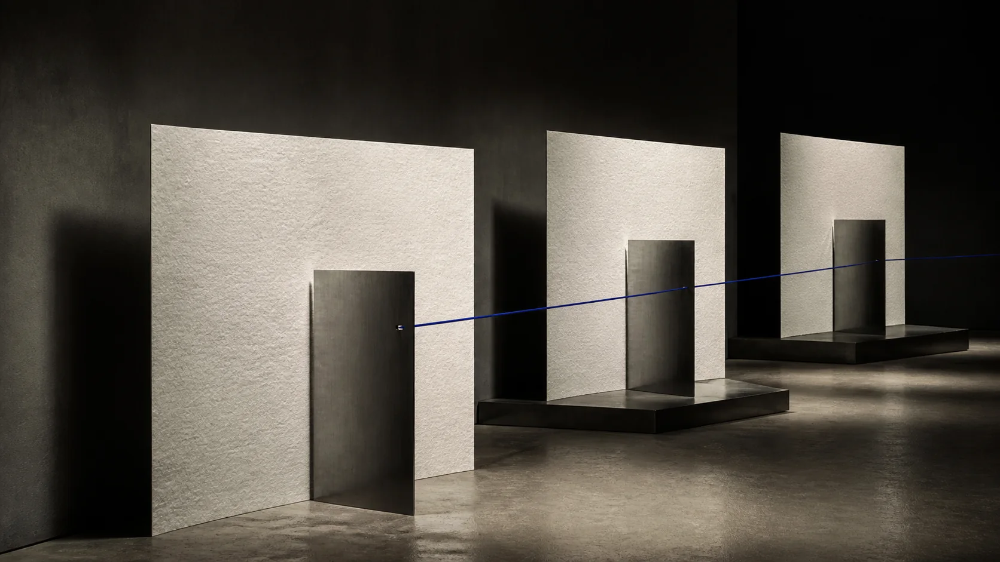
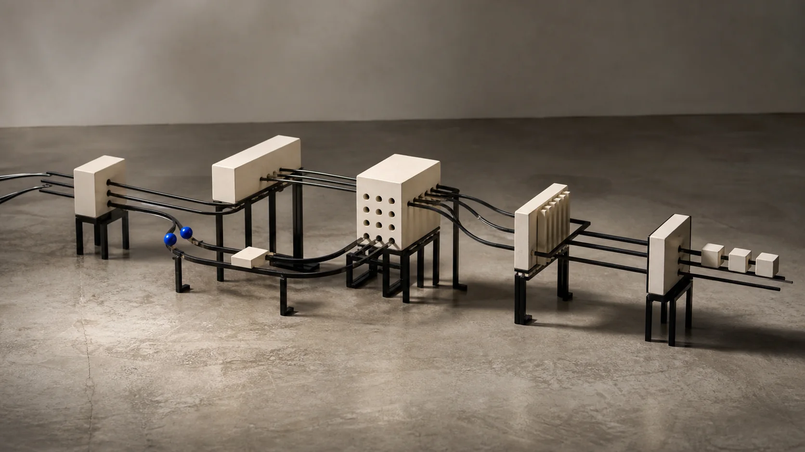

Know what the site needs to say.
Discovery, content planning, website structure and basic technical SEO.
Vulcet works across strategy, digital design, motion and development. Every engagement is shaped around the business problem rather than a fixed collection of features.
Discovery, content planning, website structure and basic technical SEO.
Custom visual direction, up to five core pages and responsive design.
Frontend development, enquiry form, analytics, performance optimisation, domain support, two revision rounds and short post-launch support.
A bespoke, multilingual and content-driven website designed for companies ready to improve their positioning, credibility and digital performance.

Strategic discovery, competitor review, digital positioning and information architecture.
Custom UI/UX, advanced responsive compositions, premium motion and up to ten page templates.
Multilingual architecture, editable CMS and systems for cases, insights, news or projects.
Enquiry flows, technical SEO, analytics, performance, deployment, QA, three revision rounds and 30 days of support.
Final investment depends heavily on product scope, technical requirements and integrations.

Discovery, requirements definition, user flows and information architecture.
Interface design, interaction logic and a reusable design system.
Frontend and backend development, database and API planning, integrations and authentication where required.
Testing, deployment, documentation and technical handover.
Larger design changes and new features are quoted separately.
Ask about ongoing supportThese can be included within the main services. They are scoped as part of the wider engagement rather than sold as isolated add-ons.